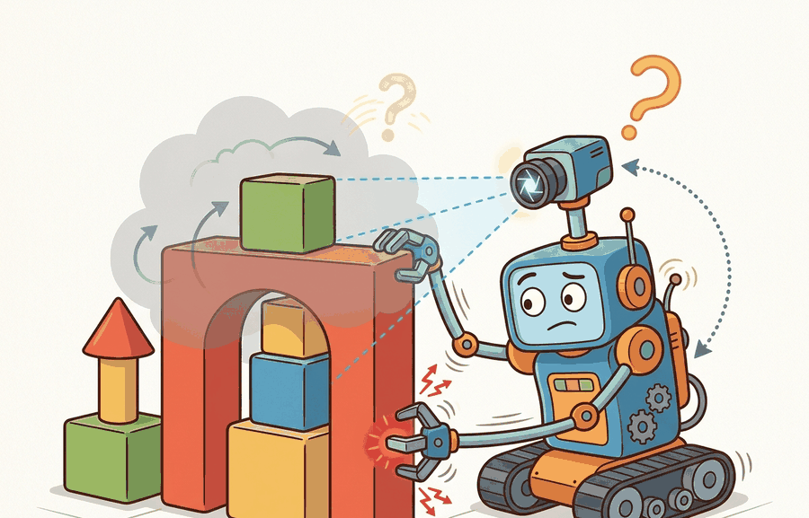

"My camera saw the block. My gripper discovered the friction. My log finally admitted both were incomplete."
A Probabilistic Robot Assistant

This section assumes familiarity with the agent-environment loop introduced in section 2.1. The belief-state representations introduced here are developed further in section 2.7, which covers particle filters for multi-modal distributions, and in section 8.6, which treats Kalman-filter fusion for sensor streams. The state-observation distinction recurs throughout Part 8 alongside learned latent world models.
A warehouse robot reaches for a box and grips air: the box shifted two centimeters while the camera shutter was open. The world changed; the sensor did not notice. This gap between what is and what the agent sees is not a hardware defect; it is a fundamental property of every physical system. Today, as robots leave controlled labs for cluttered kitchens and busy factory floors, partial observability is the central obstacle. Here you will build the vocabulary to name what is hidden, model what the agent actually receives, and reason about the beliefs an agent must maintain when certainty is permanently out of reach.
Hand a simulator the true pose, mass, friction, and contact state of every object and a robot will still grip air, because the policy never received any of it. State lives in the world; the agent acts on observation alone, its limited evidence. Figure 2.2 shows why that gap closes into a loop rather than a one-time deficit. This distinction is the vocabulary you need to debug almost every embodied AI system. A robot policy may see only pixels, joint encoders, force readings, and a stale command queue. That difference is not a nuisance. It is the problem. Figure 2.2A makes this concrete: the true world state is a full room, but the agent sees only the lit region, and the hidden variables sit in the dark, connecting the unseen state to future observations. A sensor suite that cannot measure friction, mass, or intent is not a modest limitation: it is a permanent negotiation between what the world is and what the agent is allowed to know.
State is the information sufficient to predict future dynamics and reward when paired with an action. Observation is the sensor-facing evidence available to the agent. Hidden variables are state variables that matter but are not directly observed. Partial observability is the gap that breaks policies in deployment: the normal condition in which the latest observation is not enough.
A camera frame can support useful action, but it is not the full physical situation. A deployable embodied system must decide which hidden variables to estimate, which to perturb in simulation, and which to reserve for evaluation diagnostics.
Theory
Let $s_t$ be the world state and $o_t$ be the observation emitted by sensors or an environment wrapper (the code layer, such as a Gymnasium wrapper, that packages raw sensor data into the fixed-format array a policy consumes). In a fully observable task, $o_t$ contains enough information to act as $s_t$. In embodied AI, that is usually false. Occlusion hides objects, contact reveals only local forces, latency makes images stale, and human intent is not directly measurable.
A common assumption is that a rich sensor suite (high-resolution RGB-D, multiple cameras, force-torque readings) makes observation effectively equal to state, eliminating the need for belief tracking. That assumption fails in embodied AI. No finite sensor set can measure every physically relevant quantity. Object mass, surface friction, motor temperature, and another agent's intent all drive system behavior, yet no camera captures them. Perfect pixel coverage shifts which variables remain hidden; it does not remove partial observability. Treat observation as a lossy, delayed projection of state. The agent's job is to maintain a belief over the unobserved remainder, not to hope sensors eliminate it.
Hidden variables matter because physical systems couple visible and invisible quantities. Object mass, surface friction, and motor temperature each change how forces propagate through a mechanism, yet none of them appear in a camera frame. Ignoring them forces a policy to average over the worst-case distribution at runtime. That average collapses grasps on wet surfaces and stalls joints at thermal limits. The training cost is proportionally steep in representative contact-rich manipulation benchmarks. A policy given true friction as privileged state typically converges in roughly 300 episodes on a contact-rich task; the exact ratio varies by task and simulator, but the same architecture, denied that hidden variable, commonly needs upward of 50,000 episodes to match it, because it must re-discover friction from force variance on every new object. A robot that cannot model a hidden variable cannot predict when its own actions will fail.
The mechanism is indirect inference: a hidden variable leaves a signature in multiple sensor streams over time. Slip risk is not visible but it raises force-torque variance and shifts contact duration. By tracking these secondary signals across steps and weighting them through a likelihood model (a function scoring how probable the observed signals would be under each candidate value of the hidden variable), the agent reconstructs a distribution over the hidden quantity without ever measuring it directly.
Think of a chef testing whether a pan is hot enough to sear meat. The pan's surface temperature is the hidden variable; no sensor is embedded in the steel. But the chef reads three indirect signals: the shimmer of oil spreading across the surface, the sound pitch of a water droplet dropped in, and the speed at which a wooden spoon tip starts to darken. No single signal is definitive, but together, weighted by experience, they sharpen the estimate. The agent doing belief tracking works the same way: each sensor stream is one imperfect witness to a quantity that can never be directly seen, and the belief narrows as the witnesses accumulate.
The agent therefore maintains an estimate $\hat{s}_t$, formally a belief $b_t$, a probability distribution over possible states rather than a single guess. The algorithm below refers to this distribution directly, so it is worth fixing the notation here before working through the update steps: $b_t(s)$ is the probability the belief assigns to state $s$ at time $t$, and $\hat{s}_t = \arg\max_s b_t(s)$ is just the single most likely state under that distribution. That estimate may be a Kalman filter state, a particle filter, a learned recurrent state, a transformer memory, or a world-model latent (a compressed vector, learned rather than hand-designed, that a neural network updates each step to summarize everything it has inferred about the hidden state so far). The name matters less than the contract: what uncertainty does it represent, how is it updated, and how does action use it? The cost is measurable. In representative 2024 benchmarks, grasping policies given true object pose reach roughly 90% success in about 500 episodes; the same architecture on raw camera observations needs several thousand episodes to hit 85%, and still fails when lighting shifts. That order-of-magnitude gap is not a modeling failure. It is the price of partial observability.
Partial observability turns the loop into observe, update belief, choose action, execute, and revise. In simulation, privileged state can be logged for diagnostics while keeping the agent restricted to observations. This separation is essential for honest evaluation.
Algorithm: Partial-Observability Belief Update
Input: prior belief $b_{t-1}$, new observation $o_t$, action $a_{t-1}$, observation model $P(o \mid s)$, transition model $P(s' \mid s, a)$
Output: updated belief $b_t$ over hidden state $s_t$; policy action $a_t = \pi(b_t)$
- Predict: propagate $b_{t-1}$ through the transition model to obtain the prior $\bar{b}_t(s') = \sum_s P(s' \mid s, a_{t-1})\, b_{t-1}(s)$.
- Observe: receive observation $o_t$ from the environment or sensor wrapper.
- Update: weight the prior by the likelihood, $b_t(s) \propto P(o_t \mid s)\, \bar{b}_t(s)$, then normalize so $\sum_s b_t(s) = 1$.
Checkpoint
So far: predict pushes yesterday's belief through the transition model, observe brings in the new sensor reading, and update reweights the prior by how likely that reading was under each candidate state. Together these three steps are one pass of a Bayes filter; the remaining steps below just classify, monitor, act on, and stress-test the belief this pass produced.
- Classify each state variable as observed, estimated, delayed, hidden, or evaluator-only; update only the relevant components of $b_t$.
- Check whether any evaluator-only variable has entered the policy observation channel; if so, flag a privileged-state leak before continuing.
- Compute uncertainty: record the entropy $H(b_t) = -\sum_s b_t(s)\log b_t(s)$ or covariance trace $\operatorname{tr}(\Sigma_t)$ alongside the point estimate $\hat{s}_t = \arg\max_s b_t(s)$.
- Select action: query policy $\pi$ with belief summary $b_t$ to obtain $a_t = \pi(b_t)$; when $H(b_t)$ exceeds threshold $\theta$, allow an information-gathering action (reobserve).
- Log the full triplet $(o_t,\, \hat{s}_t,\, H(b_t))$ to the diagnostic record for offline analysis.
- Execute $a_t$ in the environment to complete one step of the observe-update-act loop.
- Stress-test: after $N$ steps, replay the diagnostic log under simulated occlusion and sensor delay to confirm $H(b_t)$ rises appropriately and policy degrades gracefully.
Using only the current observation fails because a single frame discards causal history: an object that was visible two steps ago and is now occluded has not disappeared. A belief state aggregates evidence across time so the agent can act rationally even when the present frame is ambiguous. The choice of representation determines what uncertainty can be tracked. A Kalman filter is exact when noise is Gaussian and dynamics are linear, which suits joint-encoder fusion. A particle filter handles multi-modal distributions, which suits place recognition where several locations are plausible. A learned recurrent state (Gated Recurrent Unit (GRU), Long Short-Term Memory (LSTM), or a transformer key-value memory) is appropriate when the relevant history is long and the structure of the hidden state cannot be designed by hand, as in language-conditioned manipulation. The key question is not which is best in general, but which uncertainty model matches the failure modes that matter for your specific deployment.
When using Gymnasium's FrameStack wrapper to carry observation history, the stacked output is a LazyFrames object, not a NumPy array. Passing it directly to PyTorch or a policy network raises a silent shape error or produces unexpected results. Call np.array(obs) immediately after env.step() or env.reset() to force materialization before any tensor conversion. Alternatively, pass frame_stack_kwargs={"lz4_compress": False} and wrap with gymnasium.wrappers.TransformObservation(env, lambda o: np.array(o)) once at environment creation so every downstream consumer receives a plain array.
Worked Example
Code Fragment 2.2.1 updates a tiny belief state from a partial observation. The hidden variable is slip risk, which the camera cannot directly see.
# Section 2.2: runnable checkpoint for State vs. observation.
# Keep the output small so the evidence record can be inspected directly.
belief = {"block_x": 0.50, "block_visible": True, "slip_risk": 0.20}
observation = {"detected_x": 0.54, "visible": True, "force_spike": False}
if observation["visible"]:
belief["block_x"] = 0.7 * belief["block_x"] + 0.3 * observation["detected_x"]
else:
belief["block_visible"] = False
if observation["force_spike"]:
belief["slip_risk"] += 0.25
else:
belief["slip_risk"] *= 0.95
print({"estimated_x": round(belief["block_x"], 3), "slip_risk": round(belief["slip_risk"], 3)})Step-Through: Belief Update Over Two Steps
Trace the belief update from Code Fragment 2.2.1 with concrete numbers across two time steps. Start with belief block_x = 0.50 and slip_risk = 0.20. Step 1, observation detected_x = 0.54, visible = True, force_spike = False. The position blends as 0.7 times 0.50 plus 0.3 times 0.54 = 0.350 + 0.162 = 0.512, and slip_risk decays as 0.20 times 0.95 = 0.190. New belief: block_x = 0.512, slip_risk = 0.190. Step 2, the gripper makes contact: observation detected_x = 0.56, visible = True, force_spike = True. Position blends as 0.7 times 0.512 plus 0.3 times 0.56 = 0.358 + 0.168 = 0.526, and slip_risk jumps as 0.190 + 0.25 = 0.440. New belief: block_x = 0.526, slip_risk = 0.440. Notice the hidden variable (slip_risk) more than doubled from a single force spike the camera never registered, while the visible variable (block_x) crept forward smoothly. The contact event rewrote the agent's estimate of a quantity no pixel could measure.
Expected output: an updated position estimate and slip-risk estimate. The example should make clear that vision updates visible pose, while contact evidence updates a hidden physical variable.
The 15-line belief update becomes a few estimator or logging components in a real stack. MuJoCo and Isaac Lab can expose privileged simulator state for diagnostics, ROS 2 can publish state estimates as topics, and LeRobot can store synchronized observations and actions for later analysis. The hand-built version is still useful because it states exactly which hidden variable is being tracked.
Practical Recipe
- List variables needed to predict dynamics, not just variables found in the sensor packet.
- Mark each variable as observed, estimated, delayed, hidden, or evaluator-only.
- Add uncertainty to every estimated variable and log that uncertainty.
- Carry history when the current observation is insufficient.
- Evaluate under occlusion, sensor delay, calibration drift, and contact changes.
Treating observation as state creates brittle policies. A camera frame may show the gripper and block, but not friction, object mass, motor temperature, cable drag, or a person about to enter the workspace.
A manipulation lab trained a policy on visible object pose and saw strong simulation success. On the real robot, the gripper briefly occluded the object before contact, and the policy moved as if the last visible pose were still certain. Adding a belief state with last-seen pose, elapsed time, and confidence let the controller slow down and reobserve.
Real-World Application: Autonomous Driving
Waymo's Driver is understood, based on the company's own public safety and engineering disclosures rather than an independent audit of its internals, to maintain a belief over hidden variables it cannot directly sense: a pedestrian occluded behind a parked truck, or the intent of a car drifting toward a lane line. Its perception stack fuses LiDAR, radar, and camera streams into a tracked world model that propagates last-seen positions and predicts trajectories during occlusion, an instance of the same belief-state-not-observation discipline developed in this section. Publicly described behavior of this kind (slowing and creeping when uncertainty over a hidden agent rises) is consistent with reobserving rather than acting on a stale frame.
If the agent says it knows the whole state from one RGB image, ask it where the object mass is hiding. The answer is usually "in the failure case."
Language-conditioned belief over long horizons. Large vision-language models are being fine-tuned to maintain implicit belief states across unstructured manipulation episodes. Google DeepMind's RT-2-X (2024) and the subsequent SpatialVLA (2025, Shanghai AI Lab) treat the token sequence as a compressed observation history and report (evidence limited to the benchmarks the original papers report, not independently reproduced here) that a frozen VLM (Vision-Language Model, a network jointly trained on images and text) backbone can track object permanence across occlusions without any explicit filter, typically outperforming prior recurrent baselines on out-of-distribution lighting in the Open-X embodiment benchmark.
Uncertainty-aware neural state estimators. Rather than hand-coded Kalman or particle filters, several 2024-2025 papers train neural networks that output explicit calibrated uncertainty alongside point estimates. HiP (Hierarchical Inference for Policies, Freiburg 2024) learns a posterior over hidden physical parameters (mass, friction) jointly with a policy and propagates that posterior through a differentiable simulator layer. The result is a contact-aware grasp planner that gracefully degrades under partial occlusion by widening its grip aperture in proportion to estimated pose uncertainty, a behavior that purely reactive policies never exhibit.
Passive tactile sensing for hidden-variable recovery. Vision-based tactile sensors (GelSight, DIGIT) are being used to measure contact geometry and infer hidden variables such as object surface texture and deformability that cameras cannot see. Meta AI's Sparsh (2024) trains a universal tactile encoder across seven sensor designs and reports (a figure from the paper's own benchmark suite, not an independently verified deployment result) that the resulting embedding predicts slip onset and object compliance accurately enough to reduce grasp failures on unseen deformable objects by roughly 40 percent compared to RGB-only baselines.
Open problem for a PhD student. All three directions above produce richer belief representations, but none provides a runtime interface that lets a separate safety monitor query the policy's uncertainty before a high-stakes action. Designing a standardized uncertainty API, analogous to a ROS topic, that decouples the belief-tracking module from the safety watchdog and is trainable end-to-end would unlock real-time human-robot co-monitoring without requiring access to policy internals. The key difficulty is that expressive uncertainty (multi-modal posteriors over pose and intent) must be compressed into a low-latency signal the watchdog can threshold without distorting the policy gradient.
Modify Code Fragment 2.2.1 so the object is invisible for three time steps. Log how confidence changes, then decide when the robot should stop and reobserve.
For a tabletop robot, can you name three variables that affect future action but are not directly visible in the latest camera image?
The title of this section promises not just definitions but the ability to reason about the beliefs an agent must maintain when certainty is out of reach. Concretely, that reasoning means answering three questions whenever you meet a new hidden variable: (1) does the belief update sufficiently, or does the policy need an information-gathering action (slow down, reobserve, probe with a different sensor) before it can act safely; (2) does the uncertainty measure ($H(b_t)$ or $\operatorname{tr}(\Sigma_t)$) actually reach the policy, or is it silently discarded at the interface; and (3) is the estimate calibrated, meaning that when the belief reports 80% confidence, the hidden variable in fact matches the point estimate roughly 80% of the time. A policy that ignores all three still runs, but it fails silently exactly when partial observability matters most, under occlusion, contact, or distribution shift.
Guarding Against Privileged-State Leakage
Naming the hidden variables is only half the discipline; the other half is making sure the agent is never accidentally handed the answers during training. State-observation discipline prevents privileged information leakage. In simulation the evaluator may know object mass, contact normal, true pose, and collision margin. The policy should receive only the observation channels that a deployed system can provide. A result that mixes those views may measure access to simulator internals rather than intelligence.
The practical artifact is a variable ledger. Each variable is marked as observed, estimated, delayed, hidden, or evaluator-only. The ledger should also name the sensor or estimator that produces it and the uncertainty attached to it.
| Tool or Library | Role in This Topic | Builder Advice |
|---|---|---|
| Kalman and particle filters | maintain explicit belief over hidden or noisy state variables | Use them when uncertainty is low-dimensional enough to model and audit directly. |
| Factor graph libraries (GTSAM, Ceres) | combine measurements, priors, and constraints into a structured state estimate | Use them for SLAM (Simultaneous Localization and Mapping, where a robot builds a map while simultaneously tracking its own pose within it) back-ends (as in ORB-SLAM3 and Cartographer), IMU (Inertial Measurement Unit) camera calibration on a Franka or quadruped, and LiDAR-inertial fusion on platforms like the ANYbotics ANYmal. |
| MuJoCo, Isaac Lab, and ROS 2 logs | separate privileged simulator state, policy observations, and deployed state-estimate topics | Use them to prove that evaluation state did not leak into policy input. |
Build a leak test before training. The test should compare evaluator state fields with policy observation fields and fail when evaluator-only variables appear in policy input.
- List all variables needed to predict dynamics and reward.
- Mark each variable as observed, estimated, delayed, hidden, or evaluator-only.
- Attach units, uncertainty, and source sensor or estimator.
- Check that evaluator-only variables are absent from policy input.
- Stress the belief with occlusion, delay, calibration drift, and contact changes.
# Build a variable ledger and detect privileged-state leakage.
variables = {
"true_pose": "evaluator_only",
"rgb_crop": "observed",
"last_seen_pose": "estimated",
"slip_risk": "hidden",
"contact_force": "observed",
}
policy_input = {"rgb_crop", "last_seen_pose", "true_pose"}
def privileged_leaks(variables: dict[str, str], policy_input: set[str]) -> list[str]:
return sorted(
name for name in policy_input
if variables.get(name) == "evaluator_only"
)
print(privileged_leaks(variables, policy_input))With the ledger and leak test in place, the remaining work is diagnostic: when a clean setup still fails, you need a way to localize which part of the belief pipeline broke. When behavior fails under partial observability, classify whether the agent lacked a sensor, lacked history, carried stale belief, underestimated uncertainty, or received leaked training information. Each cause points to a different repair.
State is what would make prediction complete. Observation is what the agent receives. Embodied intelligence lives in the gap between them.
For a mobile robot in a hallway, classify map location, battery health, pedestrian intent, wheel slip, and camera image as state, observation, hidden variable, or estimate.
Project Ideas
Beginner (weekend): Build a partial-observability wrapper in Gymnasium that randomly occludes a fraction of the observation vector each step, then compare the success rate of a policy trained on full observations versus one trained with the wrapper active. The key challenge is designing the occlusion schedule so the agent cannot memorize which channels are masked. Intermediate (1-2 weeks): Implement a particle-filter belief tracker for a simulated tabletop pick-and-place task in PyBullet or MuJoCo: the object's mass and friction are hidden variables; the filter maintains a distribution over them by weighting particles against observed contact-force readings at each grasp attempt. The key challenge is choosing a compact particle representation that captures the correlation between mass and friction without requiring thousands of particles per step. Intermediate-plus (2 weeks): Use LeRobot's dataset format and a ROS 2 node to record synchronized camera, joint-encoder, and force-torque streams from a real or simulated Franka arm, then train a GRU-based policy that consumes a rolling window of observations and compare its success under deliberate camera occlusion against a frame-only baseline. The key challenge is aligning the multi-modal streams to a common timestamp and ensuring the GRU hidden state is reset correctly between episodes.
What's Next?
Section 2.3 turns observations into action representations at several levels of abstraction.
Bibliography & Further Reading
Farama Foundation. "Gymnasium Documentation." (2024). https://gymnasium.farama.org/
The maintained reference for reset, step, spaces, termination, truncation, wrappers, and reproducible environments.
Kaelbling, L. P., Littman, M. L., and Cassandra, A. R.. "Planning and acting in partially observable stochastic domains." (1998). https://www.sciencedirect.com/science/article/pii/S000437029800023X
A foundational Partially Observable Markov Decision Process (POMDP) reference for belief-state reasoning under partial observability.
Bellman, R.. "A Markovian Decision Process." (1957). https://doi.org/10.1515/9781400835386-007
The mathematical origin of the state, action, transition, and reward framing.